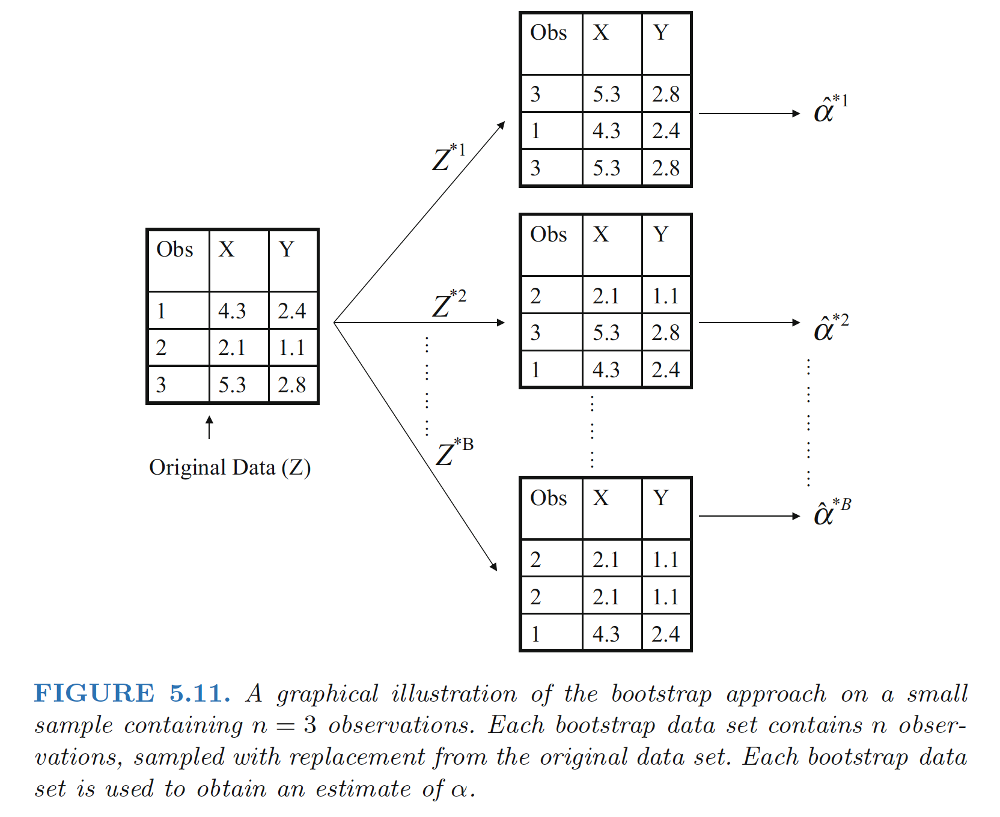

Resampling methods:involve repeatedly drawing samples from a training set and refitting a mode of interest on each sample in order to obtain additional information about the fitted model.
model assessment： The process of evaluating a model’s performance
model selection：The process of selecting the proper level of flexibility for a model
cross-validation: can be used to estimate the test error associated with a given statistical learning method in order to evaluate its performance, or to select the appropriate level of flexibility.
bootstrap:provide a measure of accuracy of a parameter estimate or of a given selection statistical learning method.
Cross Validation
The Validation Set Approach
The Validation Set Approach:
Randomly dividing the available set of observations into two parts, a training set and a validation set or hold-out set.
The model is fit on the training set, and the fitted model is used to predict the responses for the observations in the validation set.
The resulting validation set error rate—typically assessed using MSE in the case of a quantitative response—provides an estimate of the test error rate.
Disadvantage:
The validation estimate of the test error rate can be highly variable, depending on precisely which observations are included in the training set and which observations are included in the validation set.
In the validation approach, only a subset of the observations—those that are included in the training set rather than in the validation set—are used to fit the model. Since statistical methods tend to perform worse when trained on fewer observations, this suggests that the validation set error rate may tend to overestimate the test error rate for the model fit on the entire data set.
K-Fold Cross-Validation
Approach:
Randomly k-fold CV dividing the set of observations into k groups, or folds, of approximately equal size.
The first fold is treated as a validation set, and the method is fit on the remaining k − 1 folds.
The mean squared error, MSE1, is then computed on the observations in the held-out fold. This procedure is repeated k times; each time, a different group of observations is treated as a validation set.
This process results in k estimates of the test error, MSE1,MSE2, . . . ,MSEk.
The k-fold CV estimate is computed by averaging these values,
\[ \begin{align} CV_{(k)}=\frac{1}{k}\sum_{i=1}^kMSE_i \end{align} \]
Goal：
Determine how well a given statistical learning procedure can be expected to perform on independent data
We are interested only in the location of the minimum point in the estimated test MSE curve. This is because we might be performing cross-validation on a number of statistical learning methods, or on a single method using different levels of flexibility, in order to identify the method that results in the lowest test error.
Bias-Variance Trade-Off for k-Fold Cross-Validation
Leave-One-Out Cross-Validation V.S. k-Fold Cross-Validation: - k-Fold more biased than LOOCV - LOOCV will give approximately unbiased estimates of the test error, since each training set contains n − 1 observations, which is almost as many as the number of observations in the full data set. - k-fold CV for, say, k = 5 or k = 10 will lead to an intermediate level of bias
- k-Fold less variance than LOOCV
- When we perform LOOCV, we are in effect averaging the outputs of n fitted models, each of which is trained on an almost identical set of observations; therefore, these outputs are highly (positively) correlated with each other.
- the mean of many highly correlated quantities has higher variance than does the mean of many quantities that are not as highly correlated
Bootstrap
Approach:
- A data set, which we call Z, that contains n observations. We randomly select n observations from the data set in order to produce a bootstrap data set, \(Z^{∗1}\).
- The sampling is performed with replacement, which means that the replacement same observation can occur more than once in the bootstrap data set.
- In this example, \(Z^{∗1}\) contains the third observation twice, the first observation once, and no instances of the second observation.
- Note that if an observation is contained in \(Z^{∗1}\), then both its X and Y values are included.
We can use \(Z^{∗1}\) to produce a new bootstrap estimate for α, which we call \(\alpha^{∗1}\). This procedure is repeated B times for some large value of B, in order to produce B different bootstrap data sets, \(Z^{∗1}\),\(Z^{∗2}\), . . . , \(Z^{∗B}\), and B corresponding α estimates, \(\alpha^{∗1}\), \(\alpha^{∗2}\), . . . , \(\alpha^{∗B}\).
We can compute the standard error of these bootstrap estimates using the formula \[ \begin{align} SE_B(\hat{\alpha})=\sqrt{\frac{1}{B-1}\sum_{i=1}^B\left( \hat{\alpha}^{*i}-\frac{1}{B}\sum^{B}_{j=1}\hat{\alpha}^{*j} \right)} \end{align} \] This serves as an estimate of the standard error of \(\hat{\alpha}\) estimated from the original data set.
This serves as an estimate of the standard error of \(\hat{\alpha}\) estimated from the original data set.

Ref:
James, Gareth, et al. An introduction to statistical learning. Vol. 112. New York: springer, 2013.
Hastie, Trevor, et al. "The elements of statistical learning: data mining, inference and prediction." The Mathematical Intelligencer 27.2 (2005): 83-85